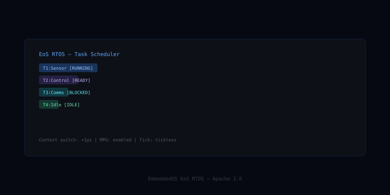

EoS — Embedded Operating System
EoS is the foundation embedded operating system at the heart of the EmbeddedOS stack — a tightly-engineered real-time kernel with a unified hardware-abstraction layer and product-profile system that lets one codebase target everything from microcontrollers to server-class SoCs.
What EoS is
EoS provides a deterministic real-time scheduler, a clean process and IPC model, a unified Hardware Abstraction Layer covering 33 peripheral classes, and 41 ready-made product profiles spanning sensor nodes, gateways, infotainment, robotics, and edge servers.
Where Linux is too heavy and bare-metal is too primitive, EoS gives you a small, predictable kernel with the modern primitives — capability-based security, hot-pluggable drivers, deterministic interrupts — that production embedded systems actually need.
Features
The shape of EoS at a glance.
Real-Time Scheduler
Microsecond-class deterministic scheduling with priority inheritance and bounded-latency guarantees.
Unified HAL
33 peripheral classes (GPIO, I²C, SPI, UART, CAN, USB, Ethernet, DMA, ADC, …) abstracted across all supported MCUs and SoCs.
Product Profiles
41 turn-key configurations: sensor node, gateway, robot controller, infotainment, edge server, and more.
SMP & AMP Multicore
Run symmetric or asymmetric multicore on the same kernel — pin RTOS to one core, Linux on another.
Capability Security
Object-capability model for processes, drivers, and IPC ports — no ambient authority, no surprise privilege.
Hot-Plug Drivers
Load and unload drivers at runtime; safe rebinding without reboot.
Tiny Footprint
Kernel + scheduler + HAL fits in < 64 KB on Cortex-M devices, scales to multi-GB SoCs.
Open Standards
MIT licensed, POSIX-leaning APIs, integrates with Zephyr/FreeRTOS drivers via shims.
Production-Ready
MISRA-aligned coding standard, CI fuzzing, formal verification of critical paths.
Open source on GitHub
EoS is MIT licensed and developed in the open. Issues, discussions, and pull requests welcome.
In the EoS stack
EoS is the highlighted layer below.
Pairs well with
Sibling components that EoS commonly works alongside.
EoS Kernel Architecture
A layered view of the EoS kernel from hardware up to user-space applications, showing the scheduler, IPC, memory manager, capability security, HAL, and BSP layers.

EoS at a Glance
| Kernel Language | C11 (ISO/IEC 9899:2011) |
|---|---|
| Scheduler | Preemptive priority-based RT scheduler with time-slicing; SMP and AMP multicore modes |
| HAL Peripheral Classes | 33 (UART, SPI, I²C, GPIO, CAN, USB, ETH, ADC, PWM, Timer, DMA, RTC, Crypto, …) |
| Product Profiles | 41 ready-made BSP profiles (sensor nodes, gateways, infotainment, robotics, edge servers) |
| Minimum Footprint | < 4 KB flash, < 2 KB RAM (bare scheduler + HAL) |
| IRQ Latency | < 1 µs on Cortex-M4 @ 168 MHz |
| Supported Architectures | ARM Cortex-M/A/R, RISC-V RV32/RV64, x86, MIPS, ARC, Xtensa |
| IPC Primitives | Message queues, shared memory, semaphores, mutexes, condition variables, event flags |
| Security Model | Capability-based access control; process isolation; secure world handoff |
| License | MIT — commercial use permitted without royalty |
| Current Version | v0.1.0 (active development) |
| Build System | eBuild (CMake + Ninja); POSIX make fallback |
Hello World on EoS
#include "eos/eos.h"
#include "eos/hal/uart.h"
/* Task: blink LED and print to UART every 500 ms */
static void task_hello(void *arg) {
eos_uart_t *uart = eos_uart_open(UART0, 115200);
while (1) {
eos_uart_puts(uart, "Hello from EoS!\r\n");
eos_gpio_toggle(LED_PIN);
eos_delay_ms(500);
}
}
int main(void) {
eos_init(); /* init kernel + BSP */
eos_task_create(task_hello, /* entry point */
NULL, /* argument */
EOS_STACK_MIN, /* stack size */
EOS_PRIO_NORMAL); /* priority */
eos_start(); /* start scheduler */
return 0;
}Compile with: ebuild build --profile cortex-m4-generic
Where EoS Runs
Industrial Robotics
Deterministic scheduling and SMP multicore support make EoS ideal for real-time motion control, sensor fusion, and safety-critical robotics applications.
Automotive ECUs
41 product profiles include automotive-grade SoCs. EoS supports AUTOSAR-compatible HAL abstractions for body control modules and ADAS sensors.
Medical Devices
Capability-based security and process isolation meet IEC 62443 requirements for connected medical devices, infusion pumps, and patient monitors.
Aerospace & Defense
Tiny footprint and deterministic IRQ latency satisfy DO-178C Level A requirements for avionics and satellite payload controllers.
IoT Gateways
Unified HAL and network stack integration enable multi-protocol IoT gateways bridging Zigbee, BLE, LoRa, and Ethernet to cloud platforms.
Energy Systems
Real-time power management and hot-plug driver support are used in smart meters, inverters, and battery management systems.
Ready to build with EoS?
Start with the docs, browse the source, or join the community.